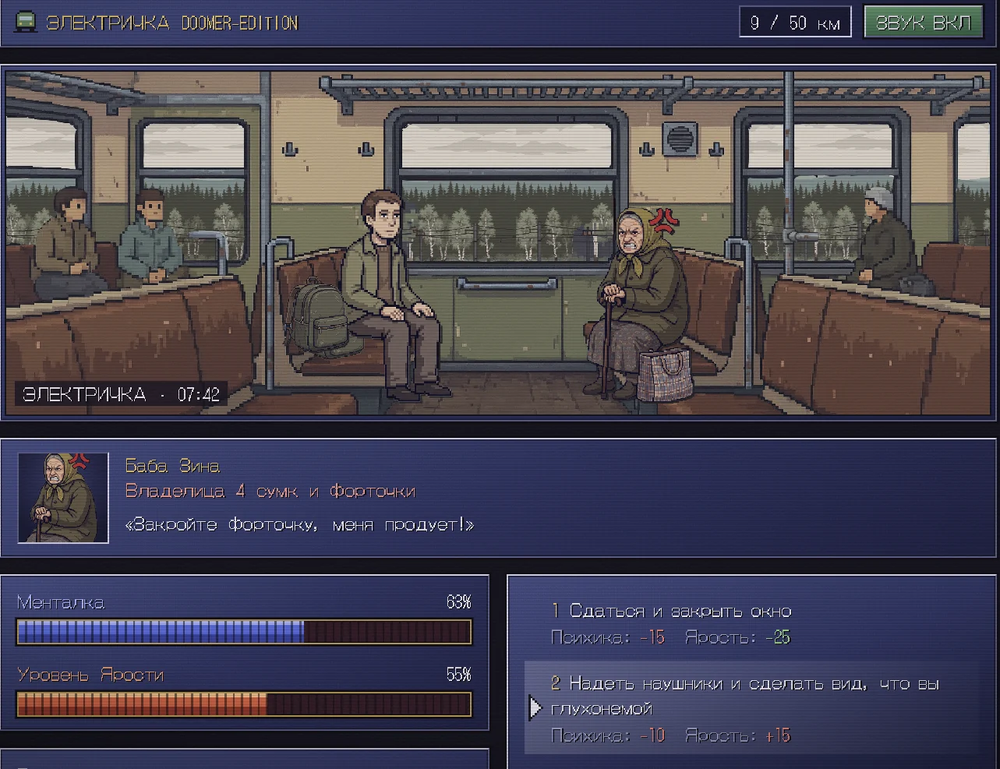
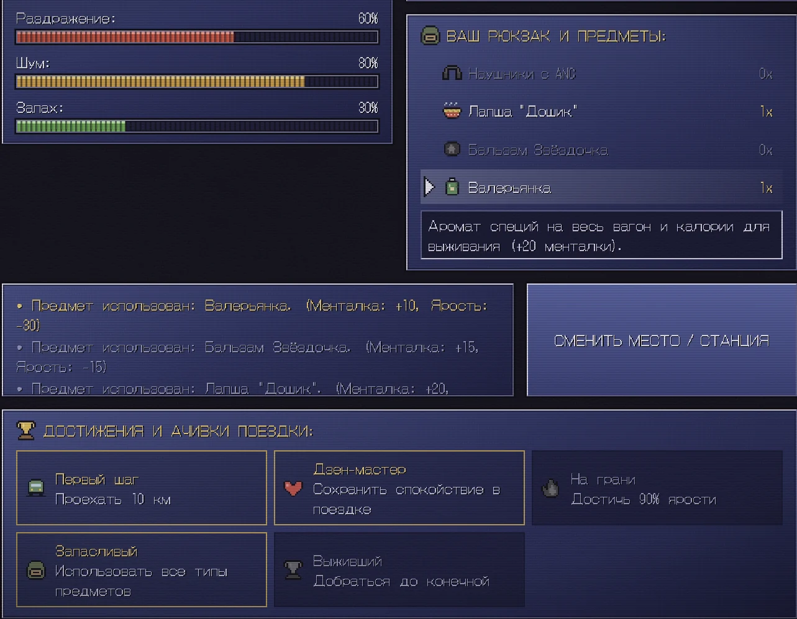
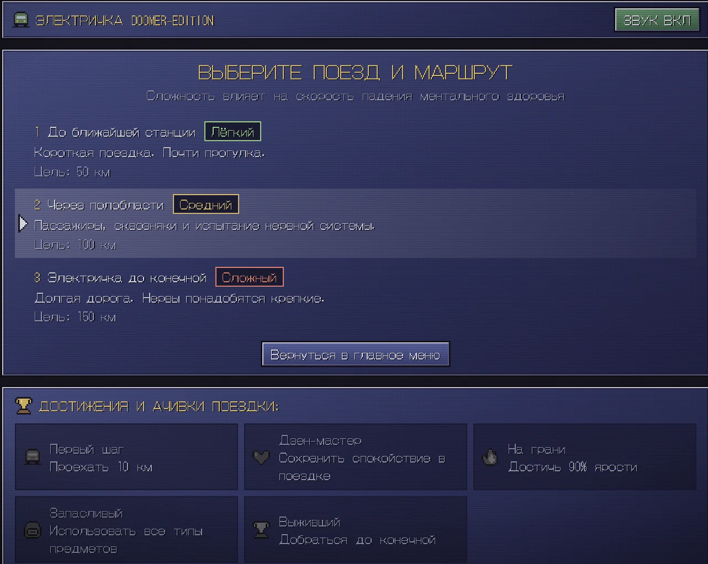

Симулятор худшего соседа
Пиксельная игра про электричку — в духе нулевых на PlayStation
- Роль
- Автор проекта: идея, визуальное направление, моушн в After Effects
- Инструменты
- After Effects, React, Vite, Pixel art
01 Контекст и цели
Свой игровой проект — сама придумала идею, сценарий и визуал. Это пиксельная игра про поездку в пригородной электричке, где все персонажи вымышлены, но ситуации слишком знакомы.
02 Задача
Превратить привычную поездку на электричке в игру, которая смешит с первого экрана, а любая бытовая мелочь работает как полноценная игровая механика.
03 Концепция и визуальный стиль
За основу визуала я взяла эстетику пиксельных игр нулевых для первой PlayStation со старыми шкалами здоровья, грубыми рамками, ачивками и титульным экраном «FIGHT!», как в классических файтингах той эпохи.
Весь юмор строится на доведённых до абсурда бытовых сценках постсоветской электрички. Баба Зина (владелица четырёх сумок и форточки) требует закрыть окно, сосед разворачивает курицу в фольге, из динамиков орёт радио, а в вагоне нечем дышать. Игрок сам решает, как на всё это реагировать, и расплачивается за выбор собственными нервами.
Интерфейс сделан нарочито олдскульным — без современных эмодзи, плавных микровзаимодействий и прыгающих иконок.
04 Ключевые UX/UI-решения
-
Выбор с ценой
У каждого ответа сразу видны последствия: «Психика −15, Ярость −25». Приходится выбирать, чем пожертвовать, а не искать «правильную» кнопку.
-
Шкалы вместо текста
Менталка и ярость, а рядом раздражение, шум и запах — по шкалам сразу видно, как дела у героя.
-
Рюкзак выживания
Наушники с ANC, «Дошик», бальзам «Звёздочка», валерьянка — у каждой вещи свой эффект, а в логе видно, что изменилось.
-
Маршрут и сложность
Три дистанции: до ближайшей станции, через пол-области и до конечной. Чем дольше ехать, тем быстрее падает менталка.
-
Два состояния персонажа
У героев есть спокойный и злой вид — злость Бабы Зины заметна по портрету ещё до первой реплики.
-
Ачивки поездки
«Первый шаг», «Дзен-мастер», «На грани», «Запасливый», «Выживший» — повод проехать маршрут ещё раз по-другому.
05 Экраны, макеты и адаптив








06 Видео и анимация
07 Реализация
- Сцену поездки собрала из отдельных слоёв и отрендерила в After Effects: интерьер вагона остаётся неподвижным, а пейзаж за окнами плавно прокручивается, создавая ощущение движения без тяжёлой анимации всего кадра.
- Саму игру написала на React и Vite.
- В интерфейс добавила переключатель звука, счётчик пройденных километров и таймер в стиле классического игрового HUD.